Fiche 03 -- Traces, Journaux et supervision
Le stockage des journaux (logs) des pare-feu Stormshield peut être configuré soit en local, soit vers un serveur Syslog, soit avec le protocole IPFIX. Les journaux, rapports d'activités et graphiques d'historiques sont disponibles sur les pare-feus ne disposant pas de stockage local des journaux. Cependant, ils sont limités à 5 rapports et graphiques au total avec un historique maximal de 7 jours.
Configuration du stockage des journaux (logs)
Le stockage en local n'est activé par défaut que sur les machines virtuelles, il faut donc le cas échéant le configurer.
- Sélectionner dans le menu à gauche Configuration / Notifications / Traces -- Syslog - IPFIX puis dans l'onglet / Traces -- Syslog -- IPFIX choisir Stockage local.
Sur une machine virtuelle, celui-ci est activé par défaut et occupe un espace disque de 6Go :
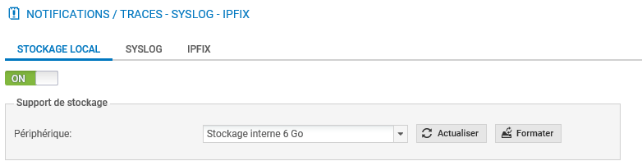
Sur un boîtier physique, le stockage local des logs n'est pas activé par défaut.
- Insérer une carte SD dans l'emplacement en façade du pare-feu SNS, lorsque le pare-feu est éteint, elle sera automatiquement détectée lors du démarrage (sauf si vous n'avez pas installé la licence) et le système vous proposera de la formater avant utilisation.
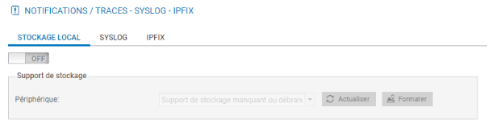
La zone Support de stockage permet de sélectionner le support de stockage local « disque dur interne » ou « carte mémoire SD ». Au besoin :
- cocher le bouton ON ;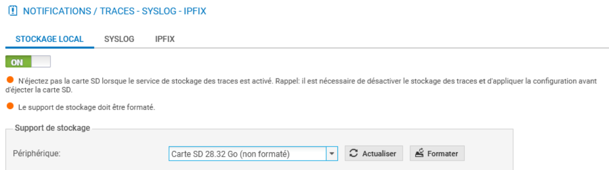
- dans la zone Support de stockage sélectionner dans la liste Périphérique la carte SD comme support de stockage.
Le système vous propose de la formater avant utilisation.
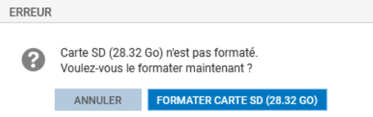
- Cliquer Formater Carte SD. Cette opération prend quelques secondes.
Attention
Afin de stocker les journaux du pare-feu SNS sur un support externe (carte SD) vous devez d'abord enregistrer la licence, le message d'erreur qui apparaît alors n'est pas explicite, le système fait comme s'il ne pouvait détecter la carte SD.
Une fois le support formaté, la liste des journaux pré-configurés est activée avec pour chaque journal un espace dédié. Vous pouvez désactiver certains journaux si vous le souhaitez.
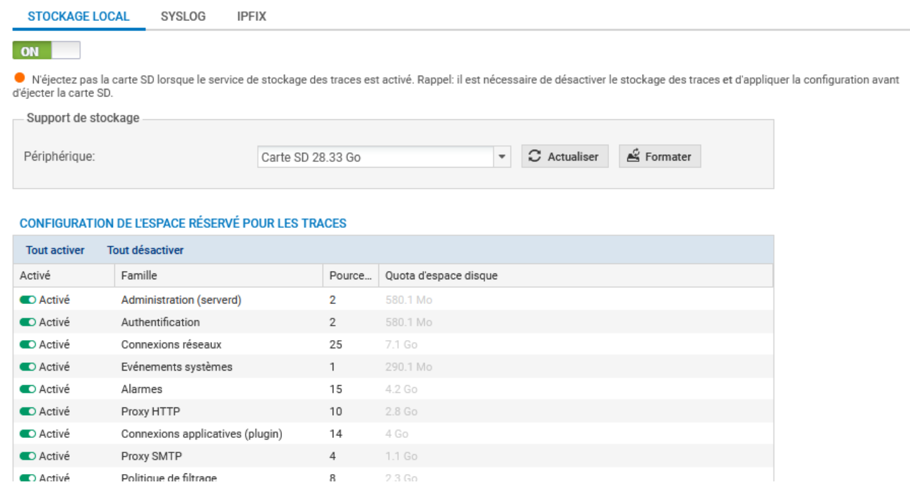
- Le cas échéant, cliquer Appliquer puis Sauvegarder pour activer le stockage local des journaux.
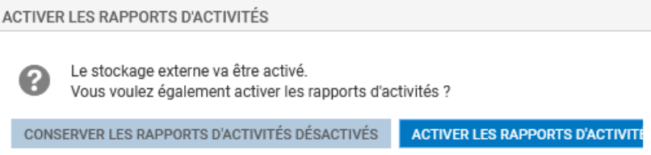
- Le cas échéant, cliquer Conserver les rapports d'activité désactivés.
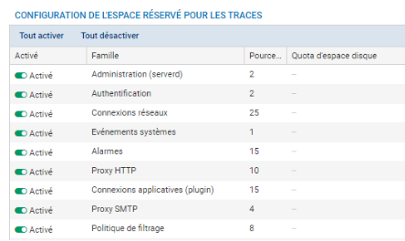
La zone Configuration de l'espace réservé pour les traces permet d'activer ou non l'écriture des traces pour une famille donnée en double-cliquant dans la colonne État correspondante. Elle permet également de configurer le pourcentage de l'espace disque réservé pour la famille de trace dans la partie Pourcentage. Il est important de noter que le total des pourcentages ne doit pas dépasser 100 %. La taille réelle de l'espace disque réservé à une famille de traces est indiquée dans la partie Quota d'espace disque.
Les entrées de journal anciennes sont écrasées par les nouvelles entrées (rotation) : il s'agit du comportement par défaut. Pour une journalisation sans rotation, il faut un stockage externe (serveur SYSLOG par exemple).
L'activation des rapports s'effectue depuis le menu Configuration / Notifications / Configuration des rapports.
- Cliquer Configuration / Notifications / Configuration des rapports et activez l'option Rapports statiques, ensuite sélectionnez les rapports souhaités dans le panneau Liste des rapports.
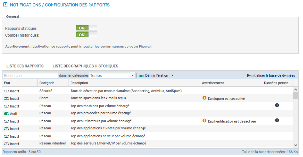
Par défaut le rapport sur le Top des protocoles par volume est activé si vous activez les rapports.
L'onglet Liste des graphiques historiques permet de visualiser et modifier les graphiques activés par défaut.
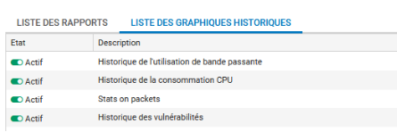
Les Journaux
Les fichiers journaux sont organisés en plusieurs catégories dont les plus importantes sont listées ci-dessous.
- Administration : regroupe les évènements liés à l'administration du pare-feu SNS. Ainsi, toutes les modifications de configuration effectuées sur le pare-feu sont journalisées.
- Authentification : regroupe les évènements liés à l'authentification des utilisateurs sur le pare-feu SNS.
- Connexions réseaux : regroupe les évènements liés aux connexions TCP/UDP traversant ou à destination du pare-feu SNS non traitées par un plugin applicatif.
- Évènements systèmes : regroupe les évènements liés directement au système: arrêt/démarrage du pare-feu SNS, erreurs système, allumage/extinction d'une interface, haute disponibilité, mises à jour Active Update, etc.
- Alarmes : regroupe les évènements liés aux fonctions de prévention d'intrusions (IPS) et les évènements tracés avec le niveau alarme mineure ou majeure de la politique de filtrage.
- Proxy HTTP : regroupe les évènements liés aux connexions traversant le proxy HTTP.
- Connexions applicatives (plugin) : regroupe les évènements liés aux connexions traitées par un plugin applicatif (HTTP, FTP, SIP, etc).
- Politique de filtrage : regroupe les évènements liés aux règles de filtrages et/ou de NAT, lorsque la journalisation des règles est en mode verbeux.
Dans le contexte Monitoring, le menu LOGS - JOURNAUX D'AUDIT permet de visualiser les journaux et traces sauvegardés en local sur le pare-feu SNS, regroupés par famille de journaux : trafic réseau, alarmes, web, etc.
Exemple : la famille Trafic réseau concatène les journaux Connexions réseaux, filtrage, Proxy FTP, connexions applicatives, Proxy POP3, Proxy SMTP, Proxy SSL, Proxy HTTP, VPN SSL.
Les traces sont affichées par ordre anti chronologique (la trace la plus récente est en tête de liste).
Important
Pour appliquer le règlement général sur la protection des données (RGPD), l'accès aux logs des pare-feus SNS est restreint par défaut pour tous les administrateurs.
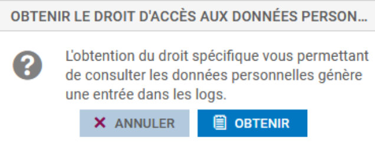
Le super administrateur « admin », ainsi que les administrateurs disposant du droit « Accès aux données personnelles » peuvent accéder aux logs complets en cliquant simplement sur Obtenir le droit d'accès aux données personnelles (logs). Cette manipulation ajoute une entrée dans les journaux qui permet de la tracer.
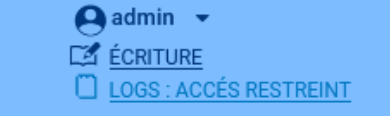
Consultation des Journaux
- Cliquer Monitoring puis LOGS - JOURNAUX D'AUDIT puis, par exemple, Trafic réseau.
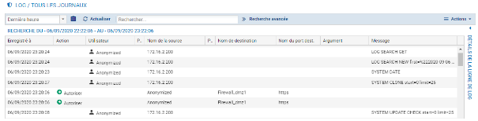
Pour voir l'ensemble des données relatives à une trace, mettez la ligne désirée en surbrillance et cliquez sur la flèche en haut à droite Détails de la ligne de log.
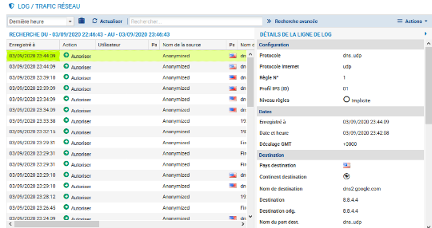
L'affichage des journaux peut être restreint à une plage temporelle prédéfinie (dernière heure, aujourd'hui, hier, semaine dernière ou mois dernier) ou personnalisée.
En cliquant sur un type de trace, une fenêtre s'affiche pour offrir des raccourcis vers plusieurs fonctionnalités qui diffèrent suivant le type de trace affichée : afficher de l'aide, ajouter la machine à la base objet, filtrer les traces en se basant sur la valeur, voir la ligne complète de la trace, etc.
Pour filtrer les traces, une barre de recherche simple permet de rechercher une chaîne de caractères dans toutes les colonnes de toutes les traces, voir l'exemple ci-dessous pour icmp.